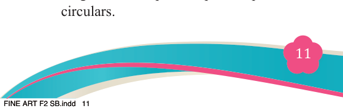
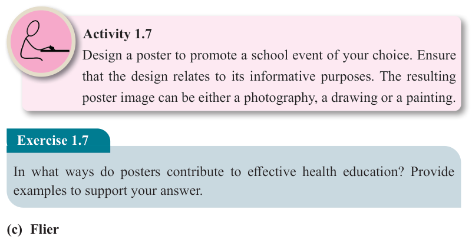

Fine Art for Secondary Schools

11

Student’s Book Form Two


Figure 1.10: Tanzania travel poster

Source: https://www.publicdomainpictures.net/en/view-image.
Activity 1.7
Design a poster to promote a school event of your choice. Ensure that the design relates to its informative purposes. The resulting poster image can be either a photography, a drawing or a painting.
Exercise 1.7
In what ways do posters contribute to effective health education? Provide examples to support your answer.
(c) Flier
A flier is a form of printed advertisement designed for widespread distribution to inform or promote events, services or causes. Flier sizes vary; they are often smaller than posters and may extend to multiple pages. They are distributed in public spaces, handed directly to individuals or mailed to target audiences. Fliers range from inexpensive photocopied leaflets to expensive and glossy full colour circulars.
04/08/2025 13:54